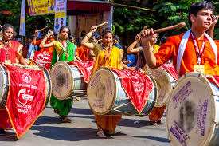
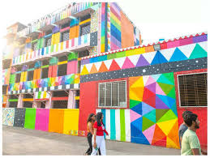
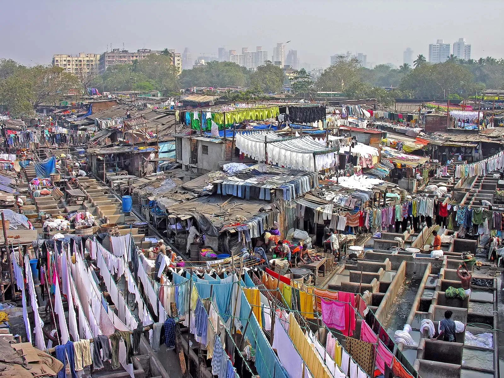

About Mumbai
Mumbai, formerly known as Bombay, is the capital city of the Indian state of Maharashtra. It is a melting pot of cultures, renowned for its Bollywood film industry, historic landmarks, diverse cuisine, and thriving arts scene.
Art and Creativity
Mumbai is home to numerous art galleries, museums, and street art. It celebrates a blend of traditional and contemporary art forms, showcasing the talent of local and international artists.



Cultural Heritage
The city's cultural heritage includes festivals like Ganesh Chaturthi, Durga Puja, and Diwali, along with its iconic architectural landmarks such as the Gateway of India and the Elephanta Caves.